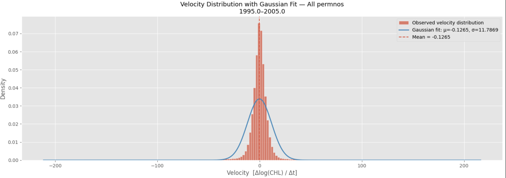

Basketball Scouting Predictor
Developing a deep learning-based scouting tool to predict player movement tendencies and decision-making patterns from prior game film and scouting data.
Undergraduate Student · Valdosta State University
Heyo! I am an undergraduate student at Valdosta State University studying Data Science with a focus in Computational Science and Engineering with minors in Math and Physics. My current research interest involves exploring how computational tools can be used to model, predict, and better understand complex systems.
Currently, I am being guided by Prof. Szabolcs Blaszek on a seismicity project where I aim to analyze long-memory dynamics in earthquake time series and better understand how statistical and econometric methods can be applied to complex geophysical systems.
I am also working alongside Prof. Shafat Mubin in atomic and particle simulations, where I am learning molecular dynamics concepts such as velocity autocorrelation functions (VACF) and how computational models can be used to study physical behavior at small scales..
Outside of my academic livelihood, I also play D2 basketball for Valdosta State University, and previously at Mercer University. I also engage in other side quests in my free time such as whittling, gaming, reading, pickleball (though im not THAT good haha), and streaming my work on YouTube.

Developing a deep learning-based scouting tool to predict player movement tendencies and decision-making patterns from prior game film and scouting data.
Exploring communication-support tools for deaf and hard-of-hearing athletes in practice and game environments.
Studying long-memory dynamics in earthquake time series and exploring how statistical methods can be applied to geophysical systems in California and Alaksa over the past 50 years.

Learning molecular dynamics concepts including velocity autocorrelation functions and computational approaches for studying physical behavior at small scales.